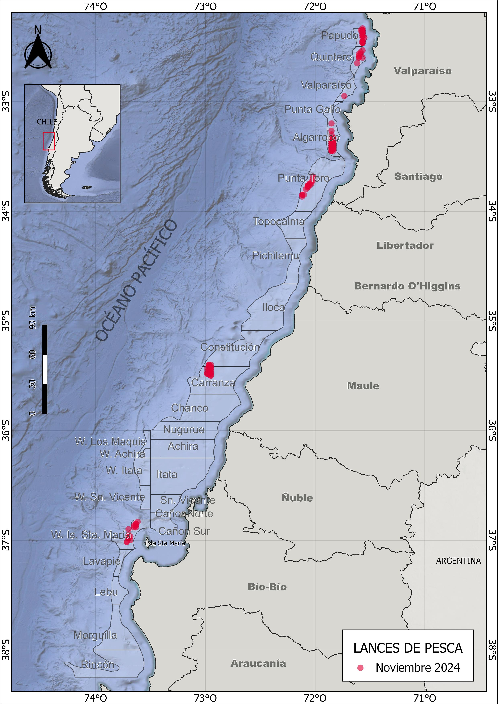
Indicadores biológico-pesqueros de langostino colorado, langostino amarillo y camarón nailon (noviembre 2024)
1 Resumen
En noviembre se registraron capturas en caladeros localizados desde la región del Biobío hasta la región de Valparaíso, centrándose principalmente en el langostino colorado y secundariamente en langostino amarillo. El langostino colorado presentó un total de 103 lances, que resultaron en una captura total de 334 toneladas. Por otro lado, el langostino amarillo fue capturado en 94 lances, totalizando una captura de 201 toneladas; sin embargo, solo el 36% de estas capturas correspondió exclusivamente a esta especie, la mayoria realizadas en los caladeros de la isla Santa María y Valparaíso.
Además, durante este mes se registró la captura de camarón nailon en forma exclusiva en el 8% de los lances y de forma mixta junto al langostino colorado en un 4%, lo que equivale a un total de 8 ton. capturadas. En términos de rendimiento pesquero promedio, este fue mayor para el langostino colorado, presentandose especialmente en la cuadra de Constitución. En contraste, el mejor rendimiento del langostino amarillo se observó en el caladero de la isla Santa María.
En cuanto a la proporción sexual, se observó una predominancia de hembras en el langostino colorado, que representaron el 78% de la muestra; de estas, el 40% se encontraba en estado ovígero. Por su parte, en el langostino amarillo tambien predominaron las hembras en un 57% de las cuales el 74% se encontró en estado ovígero.
Los indicadores biológicos muestran un aumento en las tallas medias de langostino colorado en comparación con el mes anterior; manteniendose por encima de los 36 mm de longitud media cefalotórax desde mayo. En cambio, para el langostino amarillo se presentó un descenso en las tallas en ambos sexos, aunque continua manteniendose alrededor de la media histórica.
En cuanto a la fauna acompañante, el pejerrata se representó únicamente el 0.03% de las capturas de noviembre, con un total de 160 kg provenientes del caladero de Pta. Toro.
2 Aspectos Pesqueros
2.1 Actividad pesquera
Las operaciones de pesca realizadas durante noviembre cubrieron los caladeros ubicados desde la región del Biobío a la región de Valparaíso, destacando los caladeros de Papudo, Quintero, Algarrobo, Pta. Toro, Carranza y la Isla Sta. María (Fig. 1).
2.2 Captura,esfuerzo y rendimientos de pesca
En noviembre de 2024, la actividad pesquera se concentró en el langostino colorado, que representó el 56 % de los lances realizados. De estos, el 36 % estuvo compuesto exclusivamente por langostino colorado, y otro 36 % correspondió únicamente al langostino amarillo. Además, en el 4 % de las capturas se observó la presencia conjunta de langostino colorado y camarón nailon, mientras que en el 8 % de los lances se capturó solo camarón nailon (Fig. 2). En cuanto a la distribución por zonas de pesca, el langostino amarillo predominó en Papudo, Quintero, Valparaíso y la isla Santa María. Por otro lado, en los caladeros de Punta Gallo, Algarrobo, Constitución y Carranza dominó el langostino colorado, mientras que el caladero de Punta Toro destacó por la presencia de camarón nilon, que representó el 50 % de las capturas en esa área (Fig. 3).
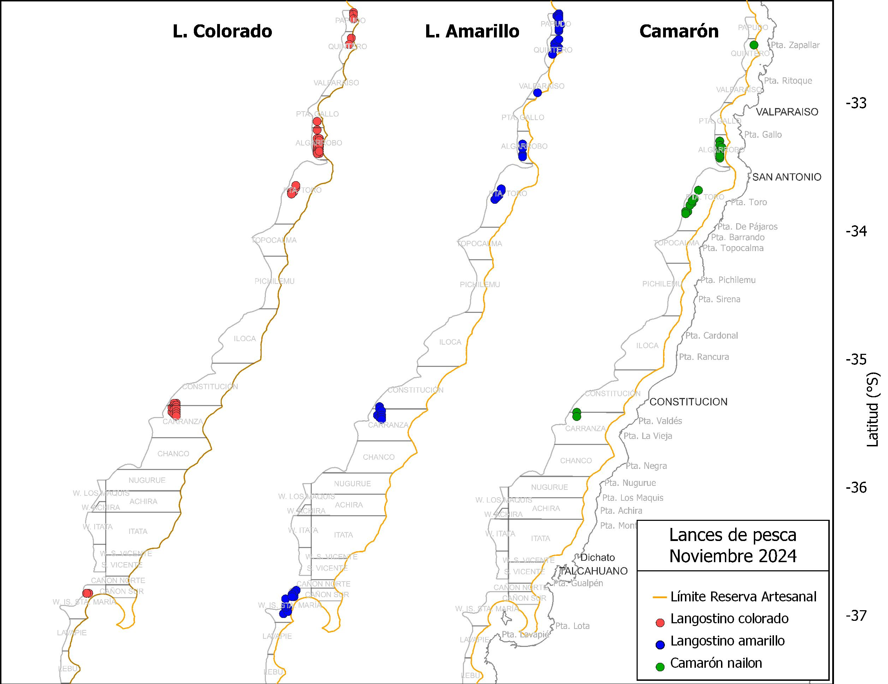

Durante noviembre, las capturas de langostino colorado alcanzaron un total de 334 toneladas, con un promedio de 3248 kg por lance de pesca. Se realizaron 204 horas de arrastre (ha), lo que resultó en un rendimiento de 1643 kg/ha (Tabla 1). En el caso del langostino amarillo, se efectuaron 94 lances, con una captura total de 201 toneladas y un rendimiento de 1067 kg/ha (Tabla 1). Por su parte, el camarón nilon fue capturado en 23 lances, sumando un total de 8 toneladas, con un rendimiento de 167 kg/ha (Fig. 4).
Tabla 1. Indicadores operacionales de la pesquería de langostino colorado, langostino amarillo y camarón nailon 2024.
| Recurso | Mes | N° de lances(n) | Cap. (kg) | Cap.lances (kg/n) | h arrast.(ha) | Rend. (kg/ha) | Prof.de fondo(m) |
|---|---|---|---|---|---|---|---|
| L.colorado | marzo | 47 | 107320 | 2283,4 | 53,5 | 2002,8 | 192 |
| abril | 276 | 719014 | 2605,1 | 382,5 | 1879,5 | 190 | |
| mayo | 250 | 797434 | 3190 | 451 | 1769 | 168 | |
| junio | 150 | 508506 | 3390 | 305 | 1667 | 163 | |
| julio | 229 | 705028 | 3079 | 495 | 1424 | 161 | |
| Agosto | 223 | 711232 | 3189 | 508 | 1400 | 166 | |
| Octubre | 223 | 651490 | 2921 | 486 | 1341 | 170 | |
| Noviembre | 103 | 334546 | 3248 | 204 | 1643 | 167 | |
| L.amarillo | marzo | 34 | 29874 | 878,6 | 37,9 | 787,1 | 191 |
| abril | 223 | 106812 | 478,9 | 308,5 | 346,1 | 192 | |
| mayo | 101 | 38540 | 382 | 172 | 223 | 176 | |
| junio | 68 | 15422 | 227 | 146 | 106 | 165 | |
| julio | 102 | 125646 | 1232 | 207 | 606 | 168 | |
| Agosto | 100 | 88907 | 889 | 228 | 390 | 176 | |
| Octubre | 112 | 179148 | 1599 | 223 | 804 | 173 | |
| Noviembre | 94 | 201168 | 2140 | 188 | 1067 | 163 | |
| Camarón | marzo | 132 | 143052 | 1083,7 | 353,6 | 404,4 | 343 |
| mayo | 30 | 51236 | 1708 | 52 | 994 | 317 | |
| julio | 10 | 880 | 88 | 21 | 43 | 170 | |
| Agosto | 6 | 320 | 53 | 13 | 24 | 191 | |
| Octubre | 9 | 340 | 38 | 20 | 17 | 172 | |
| Noviembre | 23 | 8738 | 380 | 52 | 167 | 224 |
En cuanto a la distribución espacial del rendimiento pesquero durante noviembre, el langostino colorado destacó en el caladero de Algarrobo, donde las capturas fluctuaron entre 2500 y 7500 kg/ha (Figs. 5 y 6). En el caso del langostino amarillo, el mayor rendimiento se registró en la cuadra al weste de la isla Santa María, con capturas también entre 500 y 7.500 kg/ha (Figs. 5 y 6). En contraste, el camarón nailon presentó rendimientos bajos, inferiores a 2.500 kg/ha, siendo la cuadra de Punta Toro la que mostró los mejores resultados para esta especie (Fig. 5).


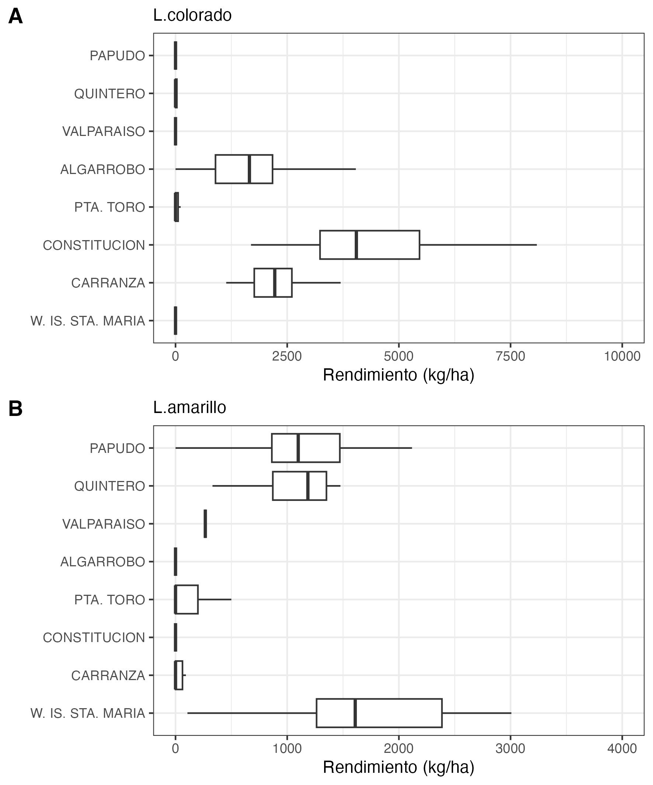
3 Aspectos biológicos
Los indicadores biológicos dicen relación con la talla promedio de machos y hembras, la proporción sexual, la estructura de tallas, el estado de madurez de las hembras ovígeras y la proporción de hembras ovígeras. Los datos fueron obtenidos a partir de muestreos aleatorios diarios de ejemplares capturados en zonas de pesca visitadas por la flota. El tamaño mínimo de muestra fue de 300 ejemplares, a los que se les midió la longitud del cefalotórax utilizando un pie de metro (0,01 mm de precisión). Los ejemplares además fueron pesados (0,01 gramos), indicándose si se trataba de ejemplares completos o incompletos. Se determinó el sexo, y en el caso de las hembras se registraron las hembras portadoras de huevos (ovígeras) y el estado de madurez de los huevos según escala de 4 puntos. Durante este mes no se presenta información de langostino amarillo debido a que no hubo muestreo biologico de esta especie.
3.1 Proporción sexual y talla promedio
En las capturas de noviembre de 2024, el langostino colorado mostró una proporción sexual favorable hacia las hembras, que representaron el 78 % del total. De manera similar, en el langostino amarillo, las hembras también predominaron, constituyendo el 57 % de las capturas (Figs. 7,8 y Tabla 2).


En cuanto a la talla media, se capturaron ejemplares de langostino colorado con una longitud cefalotórax (LC) promedio que oscila entre 25 y 45 mm, siendo los machos los que presentan las tallas más grandes. Al comparar las tallas medias a lo largo de los años, se observa que en marzo suelen comenzar con valores altos; sin embargo, este año se registraron tallas menores y sin diferenciación sexual. Pero a medida que ha avanzado la temporada de pesca, esta situación ha ido cambiando, a salvo en el mes de junio, las tallas han tendido a aumentar, manteniéndose por encima de los 36 mm LC desde mayo. En cuanto a langostino amarillo si bien este año no se han realizado muestreos biologicos de forma periodica este mes se registró un descenso en la talla media pero aun continúan en torno a las tallas medias historicas (Fig. 9, Tabla 2).
Tabla 2. Proporción sexual y talla promedio de langostino colorado, langostino amarillo y camarón nailon en las capturas de la UPS, 2024.
| Mes | Sexo | n | LC(mm) | DE(mm) | Mín.(mm) | Máx.(mm) | |
|---|---|---|---|---|---|---|---|
| L.colorado | marzo | hembra | 606 | 33,4 | 2,42 | 27,4 | 40,3 |
| macho | 386 | 33,4 | 2,58 | 28,2 | 41,4 | ||
| abril | hembra | 2542 | 35,1 | 2,43 | 28,5 | 46,0 | |
| macho | 1928 | 37,1 | 3,17 | 28,8 | 47,2 | ||
| mayo | hembras | 2588 | 37,1 | 2,16 | 29,0 | 44,7 | |
| macho | 1662 | 39,3 | 2,67 | 28,5 | 46,3 | ||
| junio | hembras | 2611 | 36,2 | 2,34 | 28,5 | 43,0 | |
| macho | 1139 | 36,8 | 3,14 | 27,0 | 44,8 | ||
| julio | hembras | 3297 | 36,7 | 2,48 | 22,5 | 47,3 | |
| macho | 1696 | 38,1 | 3,00 | 23,2 | 46,0 | ||
| agosto | hembras | 3450 | 37,3 | 2,32 | 20,6 | 45,6 | |
| macho | 2354 | 38,3 | 2,98 | 24,7 | 46,7 | ||
| octubre | hembra | 3432 | 36,1 | 2,36 | 28,6 | 43,9 | |
| macho | 970 | 37,2 | 2,93 | 28,1 | 46,1 | ||
| noviembre | hembra | 2384 | 37,4 | 1,96 | 29,0 | 43,5 | |
| macho | 688 | 38,1 | 2,61 | 25,5 | 45,0 | ||
| L.amarillo | marzo | hembra | 55 | 30,8 | 2,72 | 25,4 | 38,5 |
| macho | 160 | 38,3 | 2,92 | 30,1 | 48,1 | ||
| abril | hembra | 30 | 33,2 | 2,59 | 29,8 | 39,0 | |
| macho | 220 | 38,7 | 2,85 | 30,4 | 49,3 | ||
| julio | hembras | 364 | 31,9 | 2,48 | 23,6 | 41,7 | |
| macho | 360 | 39,6 | 4,69 | 26,5 | 50,1 | ||
| octubre | hembra | 624 | 32,6 | 3,11 | 23,0 | 44,1 | |
| macho | 1168 | 40,5 | 4,80 | 21,7 | 54,2 | ||
| noviembre | hembra | 851 | 32,6 | 3,58 | 20,3 | 43,9 | |
| macho | 649 | 39,2 | 5,79 | 22,6 | 53,3 | ||
| C.nailon | marzo | hembra | 1540 | 28,2 | 2,74 | 19,9 | 34,9 |
| macho | 957 | 27,7 | 2,81 | 17,3 | 35,3 | ||
| mayo | hembra | 302 | 28,6 | 2,91 | 17,0 | 35,4 | |
| macho | 198 | 25,1 | 3,54 | 14,9 | 33,3 | ||
| noviembre | hembra | 160 | 30,9 | 2,37 | 25,7 | 36,2 | |
| macho | 90 | 29,7 | 1,75 | 25,8 | 34,5 |
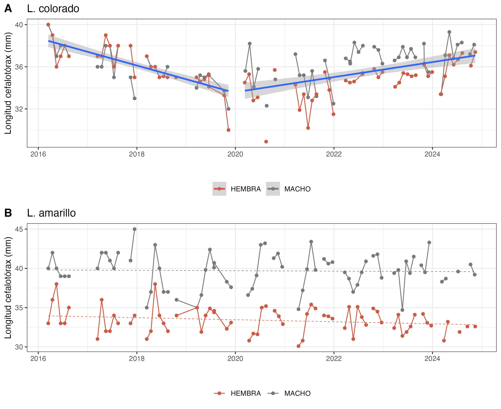
3.2 Aspectos reproductivos
En noviembre de 2024, el 40 % de las hembras de langostino colorado se encontraban en estado ovígero, reflejando una disminución en el estado de madurez que había superado el 50 % desde abril. En cuanto al langostino amarillo, el 74 % de las hembras estaban en estado ovígero, mientras que el 12 % se encontraban en estado maduro (Fig. 10 y Tabla 3).
Tabla 3. Porcentaje de hembras ovígeras y hembras maduras de langostino colorado y amarillo UPS 2024, y de hembras potadoras e inmaduras de camarón nailon
| Recurso | Estado | mar. | abr. | may. | jun. | jul. | ago. | oct. | nov. |
|---|---|---|---|---|---|---|---|---|---|
| L.colorado | Normal | 80% | 27% | 10% | 9% | 9% | 6% | 19% | 32% |
| Ovígeras | 20% | 70% | 84% | 82% | 75% | 86% | 69% | 40% | |
| Madura | 0% | 3% | 6% | 9% | 16% | 8% | 12% | 28% | |
| Total n° | 606 | 2542 | 2588 | 2611 | 3297 | 3450 | 3432 | 2384 | |
| L.amarillo | Normal | 100% | 100% | - | - | 12% | - | 7% | 14% |
| Ovígeras | 0% | 0% | - | - | 87% | - | 78% | 74% | |
| Madura | 0% | 0% | - | - | 1% | - | 15% | 12% | |
| Total n° | 55 | 30 | - | - | 364 | - | 624 | 851 |
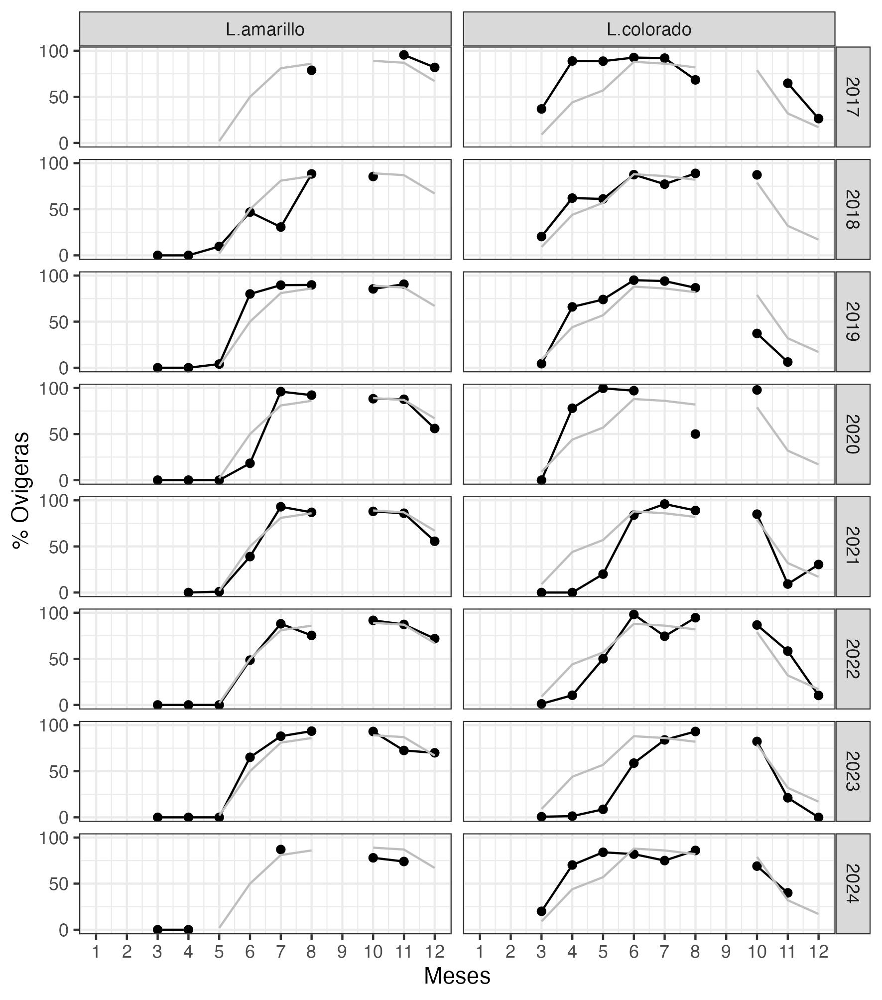
3.3 Composición de tallas
La comparación de las tallas del langostino colorado no revela diferencias significativas entre los sexos en ambas especies (t-Student, p > 0,05). La talla media es de 37,4 mm de longitud cefalotórax (LC) en hembras y de 38,1 mm LC en machos (Tabla 2, Fig. 10). En contraste, tanto el langostino amarillo como camarón nailon mostraron diferencias significativas entre sexos (Tabla 2, Fig. 11).
El análisis de la composición de tallas por zonas de pesca de langostino colorado mostró que las tallas modales más grandes se registraron en el caladero al weste de Maitencillo, con tamaños superiores a los 40 mm (Fig. 12). En el caso del langostino amarillo y el camarón nilon, no se observaron diferencias significativas entre las zonas; sin embargo, en el langostino amarillo destacó el weste de la isla Santa María, que presentó el rango más amplio de tallas (Figs. 13 y 14).
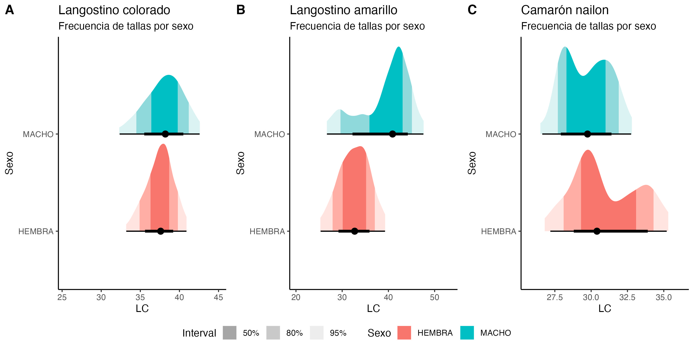
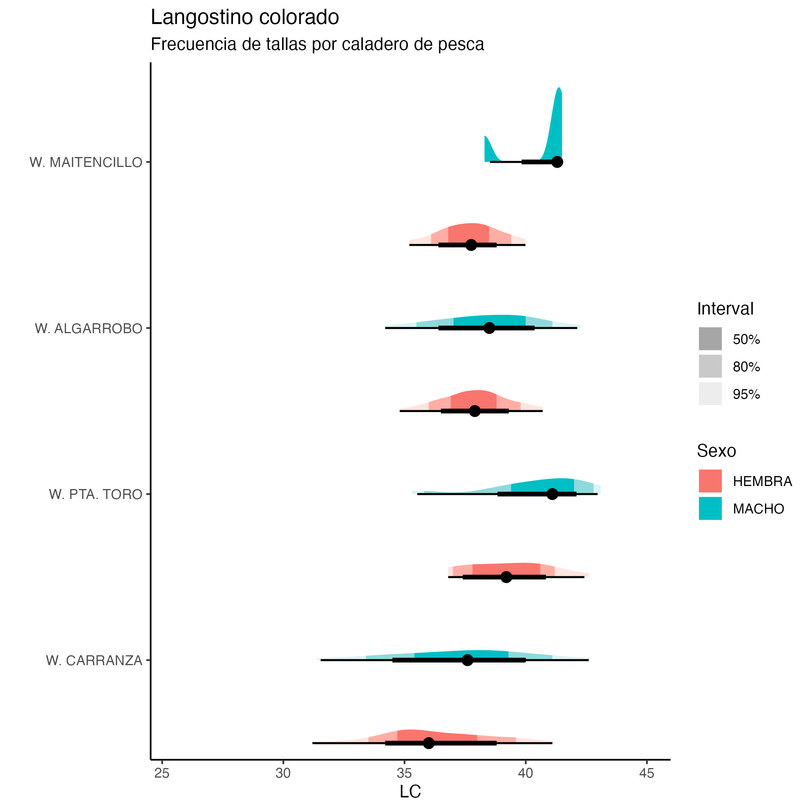
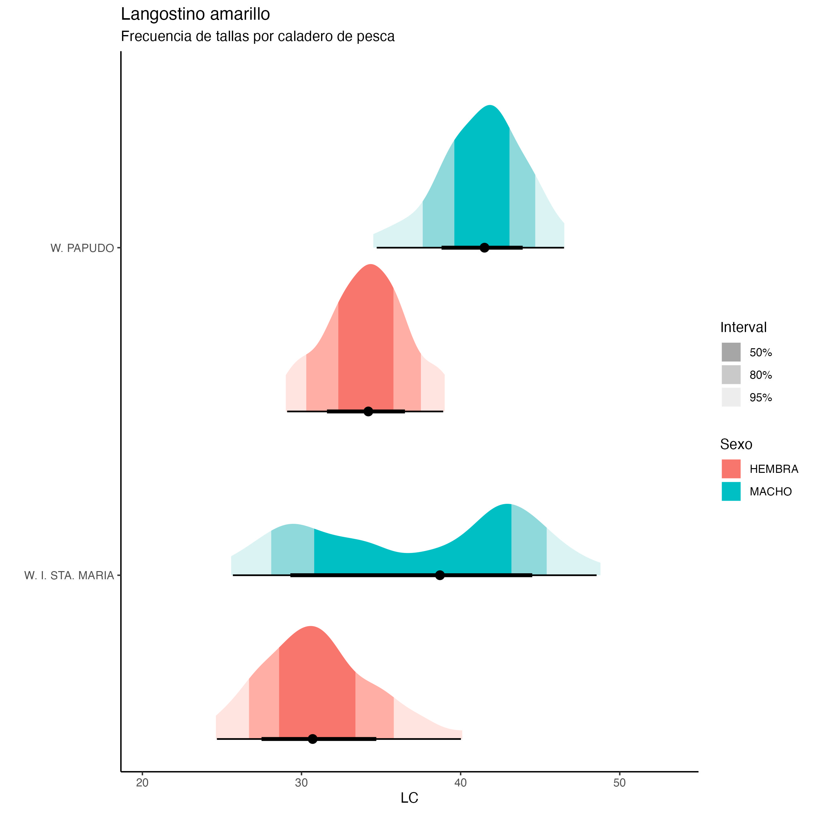
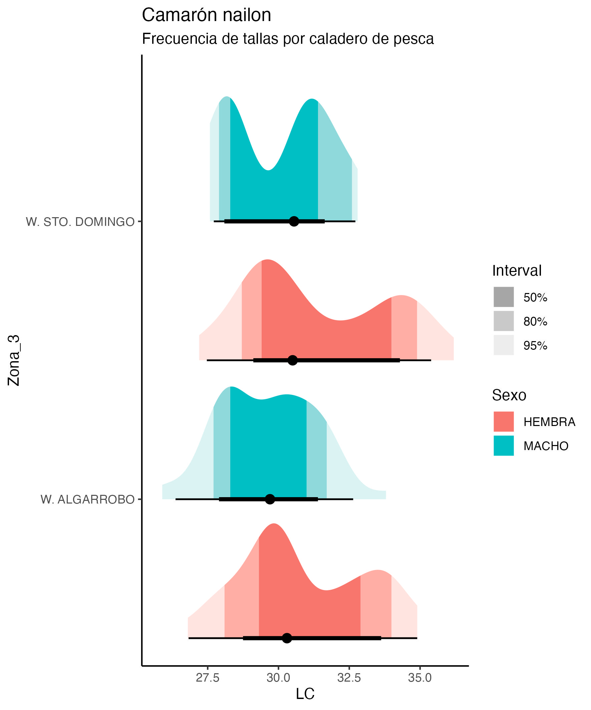
3.4 Relación longitud-peso
Con el objeto de comparar la relación longitud-peso entre machos y hembras de langostinos, se utilizó ejemplares que fueron pesados completos, es decir, con todas sus extremidades. El mejor modelo para la relación longitud-peso fue con una intersección fija y diferentes pendientes entre sexos, el peso esperado más alto a una talla determinada se presentó en machos de langostino colorado y amarillo (Fig. 15).
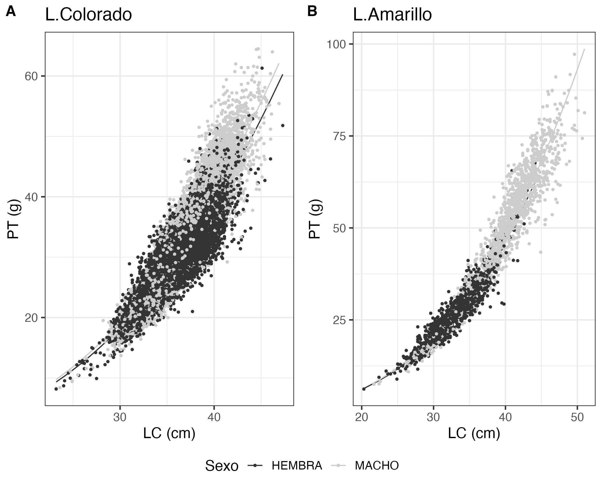
3.4 Fauna acompañante
Durante las operaciones de pesca realizadas en noviembre de 2024, se registró la presencia de pejerrata en solo un 0.03%, equivalente a 160 kg, provenientes del caladero de Pta. Toro (Fig. 16). En cuanto a otros recursos como fauna acompañante del langostino colorado y amarillo, la merluza destacó en la mayoría de los caladeros visitados, con rendimientos que oscilaron entre 25 y 100 kg/ha. También se capturó lenguado, con rendimientos entre 5 y 50 kg/ha (Fig. 17). Además, se observó la presencia de Jaiba Paco y Jaiba Limón en la mayoría de los caladeros, aunque en menor cantidad en términos de unidades por hora de arrastre (Fig. 17).
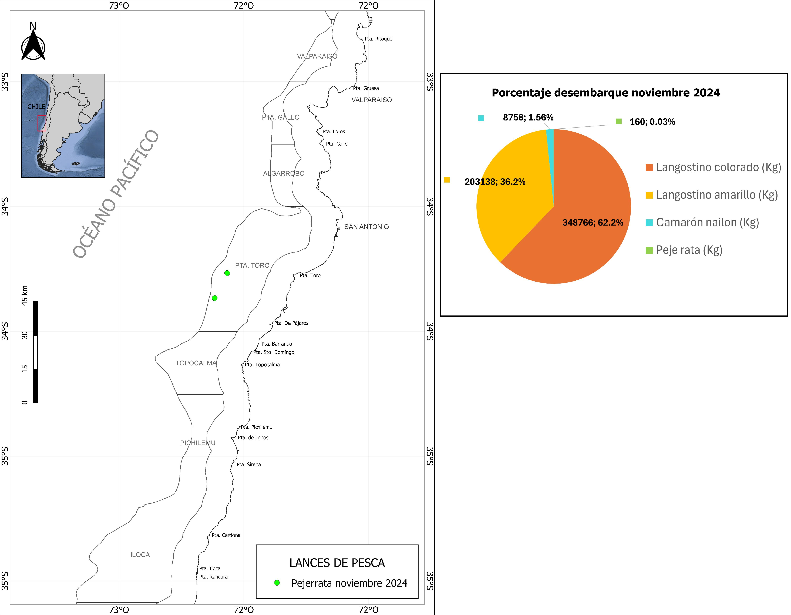
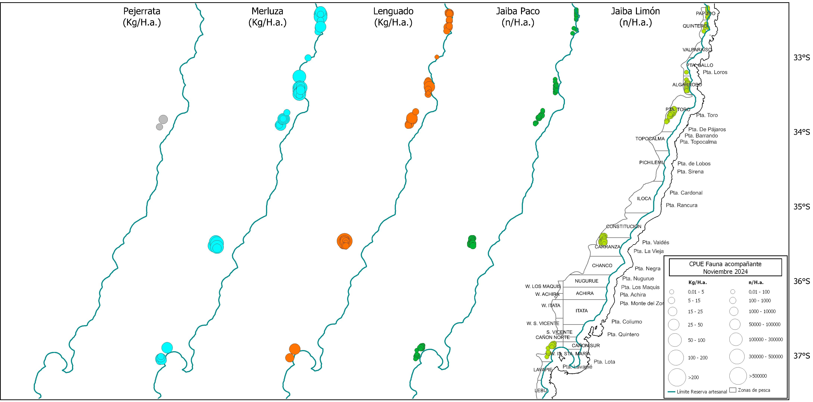